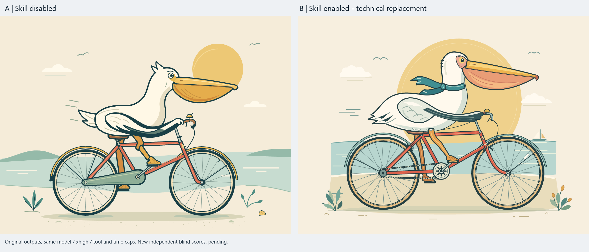

A · 519.18 s · 22 tool starts
Primary completed / 主任务正常结束
Download original A.htmlOriginal A/B outputs · gpt-6-astra / xhigh · 900 seconds / 80 tool-start caps per actor. A: no target Skill. B: released SVG Skill. Same task and tools within each pair.
关注成品质量与自主检查；时间成本和未完成状态同时展示。 中文证据 · Full evidence and limits
Animated B: budget exhausted / 动画 B 预算截止。 Playable output was saved; primary completion was not observed. No independent blind score for either final pair. Both arms received zero mid-run corrective reminders.
Recorded in Chromium; same initial 0.3 seconds removed from each side, scaled for comparison, no motion retiming. Offline playback checks do not certify all kinematics.
Primary completed / 主任务正常结束
Download original A.htmlTime cap; not completed / 预算截止，未完成
Download original B.html
A: 458.16 s / 12 starts. B: 567.76 s / 34 starts. Original B was incorrectly stopped by the recorder; this is the one authorized fresh replacement, with A retained.
One pair per task; fixed order, unblinded observations. No measured reminder reduction, statistical win rate or general causal effect. MIT.